채널: 레디포그로스 (Ready For Growth) | 길이: 15:20 | 날짜: 2026-02-09
세그먼트 1 [0:00 - 0:33]
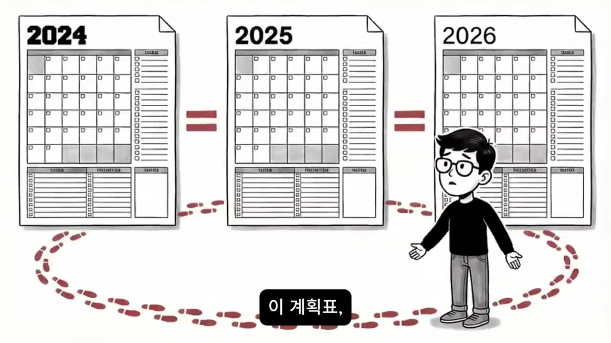
도입은 “밤 12시, 노트북 앞, 완벽한 계획표”라는 장면으로 시작합니다. 분기 목표·주간 루틴·데일리 체크리스트까지 색상별로 정리된 상태지만, 작년/재작년에도 사실상 같은 계획표를 만들었다는 자기폭로가 핵심 전환점입니다.
화면도 이를 시각화합니다. 말풍선 안에 START, 1~5 체크리스트, 노트북 아이콘이 있고, 자막은 “노트북을 열기 전에”라고 떠서 실제 실행 전에 이미 계획 단계가 과도하게 길어지는 습관을 강조합니다. 마지막 문장은 타깃 지정으로, “오늘 이야기는 INFJ, INTJ를 위한 것”이라고 명확히 못 박습니다.
세그먼트 2 [0:33 - 1:08]
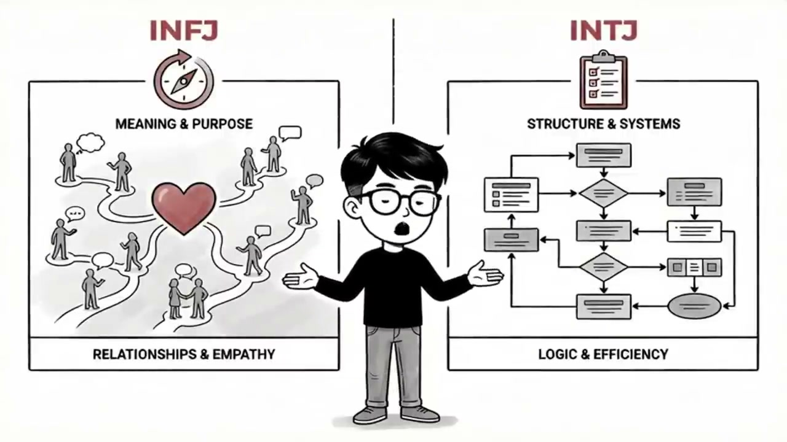
화자는 INFJ/INTJ를 “3년 뒤, 5년 뒤를 선명하게 그리는 사람들”로 규정합니다. 차이는 INFJ는 사람/의미 우선, INTJ는 구조/효율 우선이라는 배치 순서의 차이뿐이며, 본론은 공통점에 있다고 밝힙니다.
이미지에서도 좌측 INFJ 패널은 MEANING & PURPOSE, RELATIONSHIPS & EMPATHY와 하트·사람 네트워크로, 우측 INTJ는 STRUCTURE & SYSTEMS, LOGIC & EFFICIENCY와 플로우차트로 대비됩니다. 즉 성향 차이는 표현 방식이고, 문제는 “계획 천재 + 실행 브레이크”의 공통 메커니즘이라는 선언입니다.
세그먼트 3 [1:08 - 1:39]
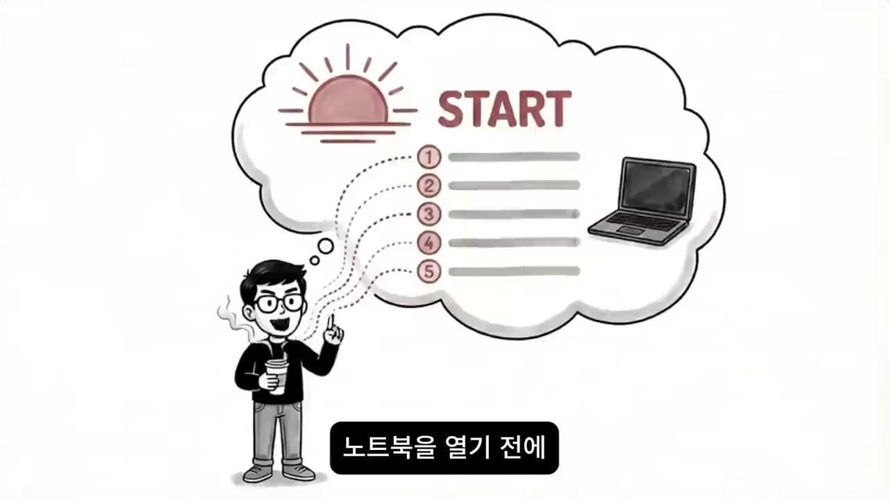
핵심 메시지는 “이건 게으름과 다른 문제”입니다. 토요일 아침 일찍 일어나 커피를 내리며 순서를 정리하지만, 막상 노트북을 열기 전 할 일 목록을 훑다 보면 “이 순서가 최선인가?”라는 의심이 시작되고 검색으로 넘어갑니다.
이미지는 2024·2025·2026 계획표가 =로 연결되어 있고 발자국이 원형 루프를 그립니다. 자막의 “이 계획표,”라는 문장과 결합해, 해마다 계획은 바뀌는 듯하지만 실행 패턴은 반복된다는 점을 직관적으로 보여줍니다.
세그먼트 4 [1:39 - 2:12]
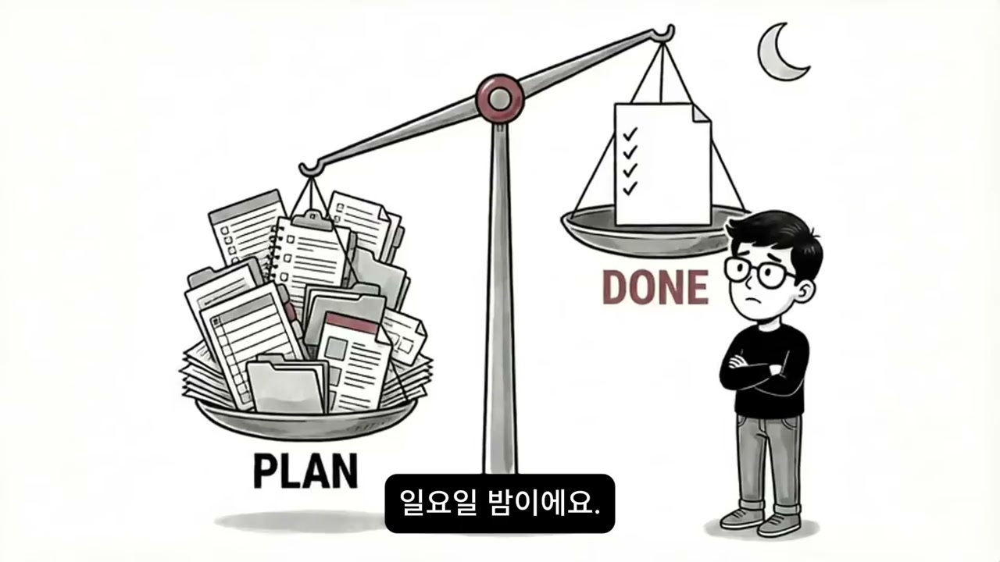
검색으로 새 방법론을 찾고 기존 계획에 녹이는 데 오전이 통째로 소모됩니다. 일요일 밤이 되면 “이번 주에 끝낼 일은 하나도 못 끝냈지만 계획은 더 정교해졌다”는 역설이 등장하고, 노션 템플릿 추가·참고자료 폴더 정리가 실행 대체물로 제시됩니다.
화면의 저울은 PLAN 쪽에 문서가 산처럼 쌓이고 DONE 쪽은 체크 한 장뿐입니다. 즉 투입량은 많지만 완료량은 적은 비대칭을 시각화해, 계획 행위가 생산성으로 착각되기 쉬운 구조를 보여줍니다.
세그먼트 5 [2:12 - 2:45]
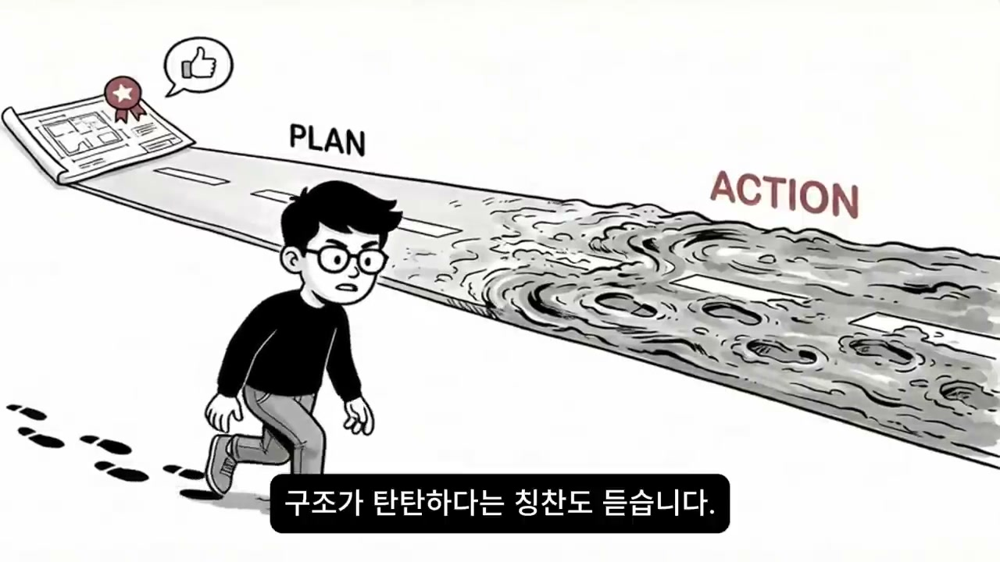
회사 프로젝트에서도 기획안은 빠르고 구조가 탄탄하다는 칭찬을 받지만, 실행 단계에 들어가면 속도가 급감한다고 말합니다. 자료를 하나 더 확인하고, 문장을 더 다듬고, 발표 흐름을 한 번 더 점검하고 싶어지는 미세 검열이 누적된다는 묘사입니다.
이미지는 수영장 다이빙대 앞에서 움츠린 인물, JUST START, WANT ≠ CAN’T, 그리고 GOAL 깃발로 구성됩니다. 즉 의지는 있으나 진입이 막히는 상태를 “못 뛰는 사람에게 그냥 뛰어들라 하는 조언” 비유로 연결하기 위한 장면입니다.
세그먼트 6 [2:45 - 3:17]
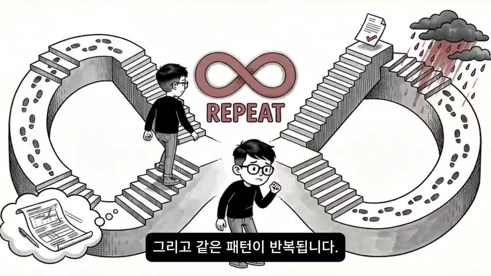
마감이 코앞에 와야 겨우 손이 움직이고, 밤을 새워 결과물은 괜찮게 나오지만 과정이 고통스러워 다시 “다음엔 더 완벽히 준비하자”는 결심으로 돌아갑니다. 운동 사례에서도 헬스장 등록 전 루틴·분할법·자세 영상 저장·식단 계획까지 끝내면 뿌듯하지만, 실제 시작은 지연됩니다.
시각적으로도 도로가 PLAN 구간은 평탄하지만 ACTION 구간은 진흙·웅덩이로 묘사됩니다. 즉 기획 단계의 인정/보상과 실행 단계의 마찰이 전혀 다른 지형이라는 뜻입니다.
세그먼트 7 [3:17 - 3:50]
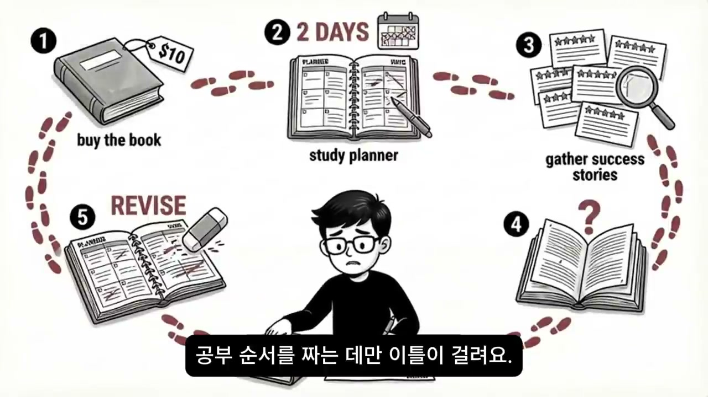
운동은 “다음 주, 또 다음 주”로 미뤄지고, 자격증 공부도 교재 구매→스터디 플래너 제작→합격후기 수집에 많은 시간을 쓰며 정작 시작이 밀린다고 말합니다. 특히 “공부 순서 짜는 데만 이틀”이 걸리고, 며칠 뒤 책을 펴서 몇 페이지 보다가 다시 “이 순서 맞나?”로 재계획에 들어가는 구조가 핵심 사례입니다.
이미지에는 buy the book($10), 2 DAYS study planner, gather success stories, ?, REVISE가 루프로 이어져 있습니다. 준비 행위가 실질 진입을 대체하는 전형적 패턴을 한눈에 보여줍니다.
세그먼트 8 [3:50 - 4:26]
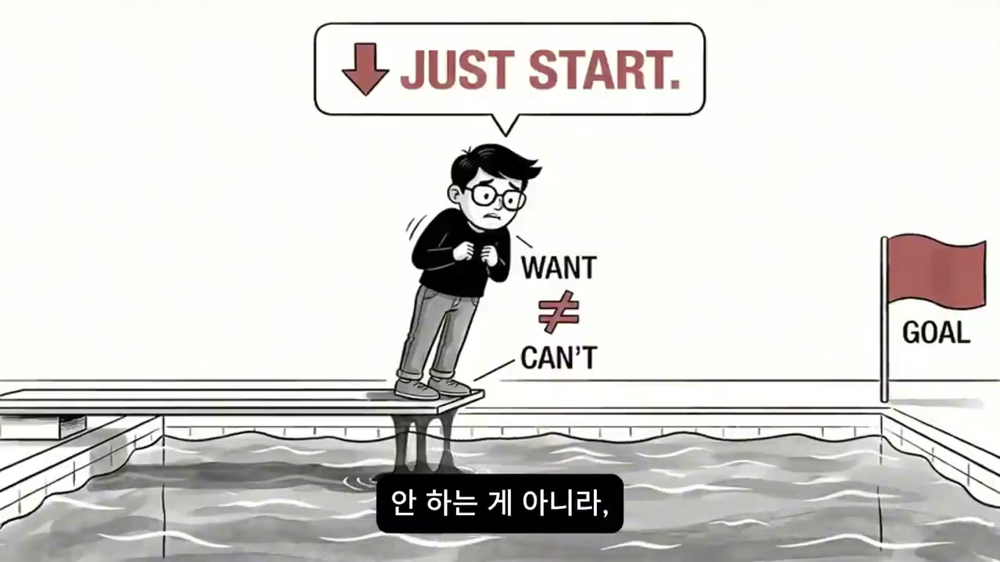
주변의 “그냥 시작해” 조언이 틀린 말은 아니지만, 실행 실패 당사자에게는 적용이 어렵다고 말합니다. 비유는 “수영 못하는 사람에게 그냥 물에 뛰어들라 하는 것”이며, 문제는 하고 싶지 않아서가 아니라 몸이 따라오지 않는 상태라는 점입니다.
화면에는 REPEAT 무한대 기호 위 계단 루프가 있고, 한쪽은 계획 문서 생각구름, 다른 쪽은 비구름/우중의 피로감으로 표현됩니다. 즉 의지 부족이 아니라 반복 구조 자체가 장애라는 메시지입니다.
세그먼트 9 [4:26 - 4:58]
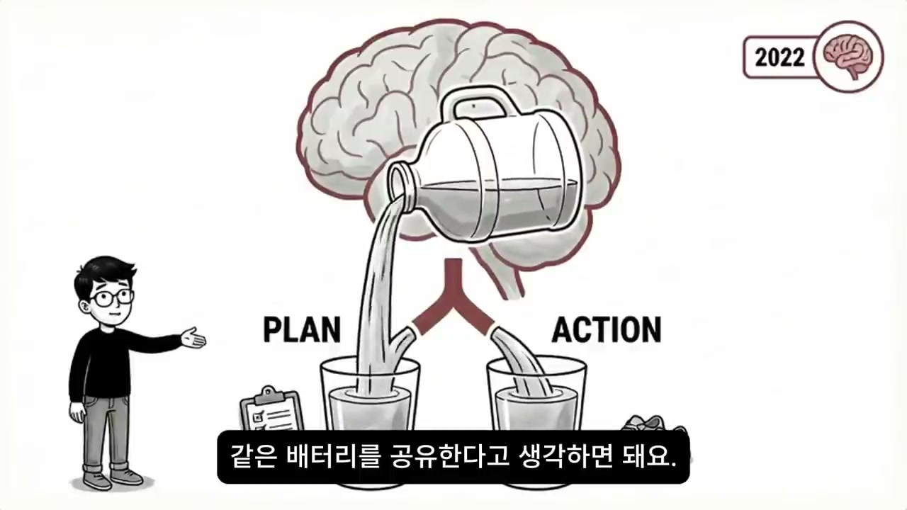
여기서 2022년 Neuron 리뷰를 언급하며 본격 과학 프레임으로 진입합니다. 계획을 담당하는 전두엽(이성의 사령탑) 관점에서, 계획과 실행이 같은 에너지를 공유한다는 설명이 제시됩니다.
이미지는 뇌 내부 DMN을 중심으로 SELF-REFLECTION, FUTURE IMAGINATION이 연결되고 명상 자세 아이콘이 주변에 배치됩니다. 즉 멍 때림/내적 시뮬레이션 네트워크가 장점도 있지만 과활성 시 문제가 될 수 있다는 준비 설명입니다.
세그먼트 10 [4:58 - 5:32]
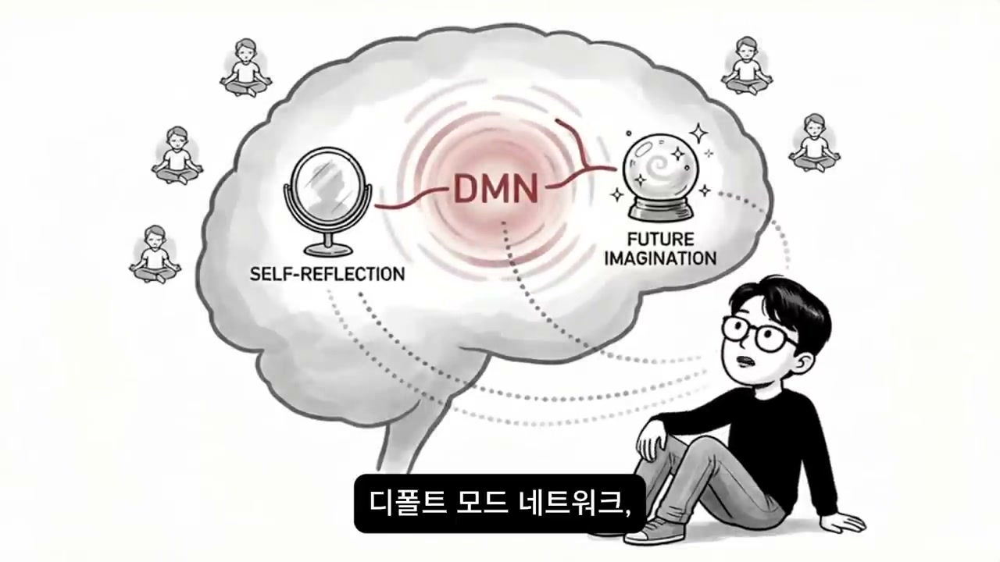
화자는 “의지력 문제가 아니다, 당신 탓이 아니다, 시스템 오류에 가깝다”고 강하게 재정의합니다. 계획 시뮬레이션에 80%를 쓰면 실행에 20%만 남는다는 비유로 에너지 분배 메커니즘을 설명합니다.
시각적으로 뇌에서 흘러나온 자원이 PLAN과 ACTION 두 컵으로 나뉘어 들어가며, 우상단에 2022 표기가 붙어 있습니다. “같은 배터리 공유” 개념을 가장 직접적으로 도식화한 장면입니다.
세그먼트 11 [5:32 - 6:06]
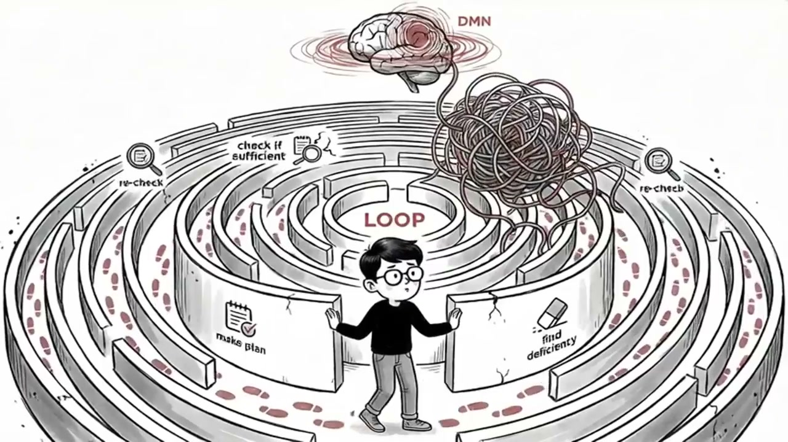
DMN 과활성 시 같은 생각을 반복 재생하는 반추가 시작됩니다. 계획 수립→충분성 점검→부족 발견→수정→재점검 루프에 들어가며, 미래 완성형이 선명할수록 이 루프에 더 쉽게 걸린다고 말합니다.
화면은 미로 중앙 LOOP, 경로상 make plan, check if sufficient, find deficiency, re-check 텍스트와 얽힌 실타래, 상단 DMN으로 구성됩니다. 인물이 입구에서 헤매는 구성 자체가 ‘탈출 실패’를 상징합니다.
세그먼트 12 [6:06 - 6:41]
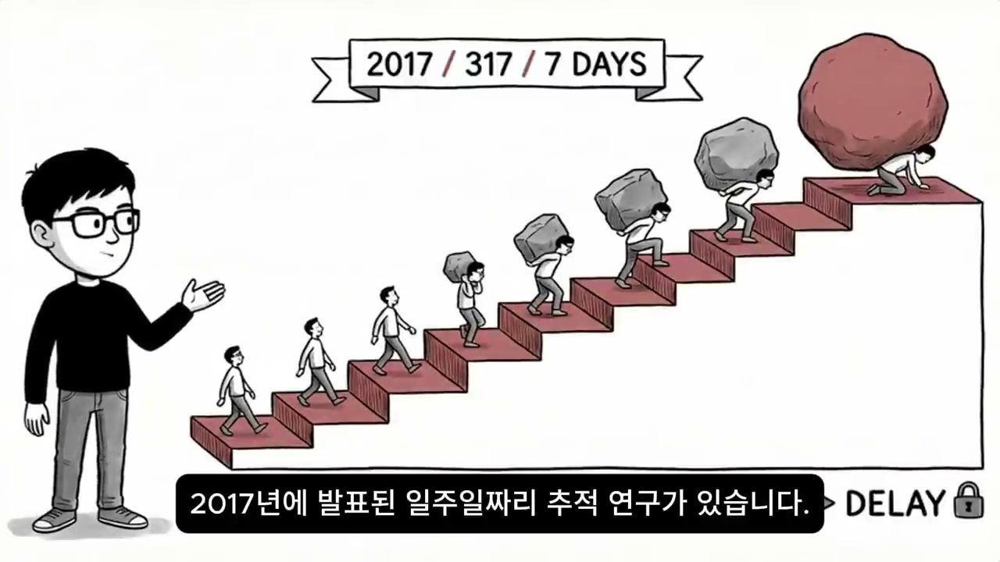
A+ 완성형이 머리에 있는데 지금 가능한 건 C+ 수준이라면, 그 간극의 불편 때문에 시작을 회피한다는 설명이 나옵니다. 근거로 2017년 연구(317명, 7일, 하루 2회 기록)를 제시하며, 완벽주의적 우려가 높은 집단일수록 미루기가 강했다고 말합니다.
이미지 배너에 2017 / 317 / 7 DAYS가 크고, 계단을 오를수록 더 큰 바위를 짊어지는 사람들, 하단 > DELAY가 보입니다. 이상-현실 괴리가 커질수록 지연 부담이 가중되는 구조를 시각화합니다.
세그먼트 13 [6:41 - 7:12]
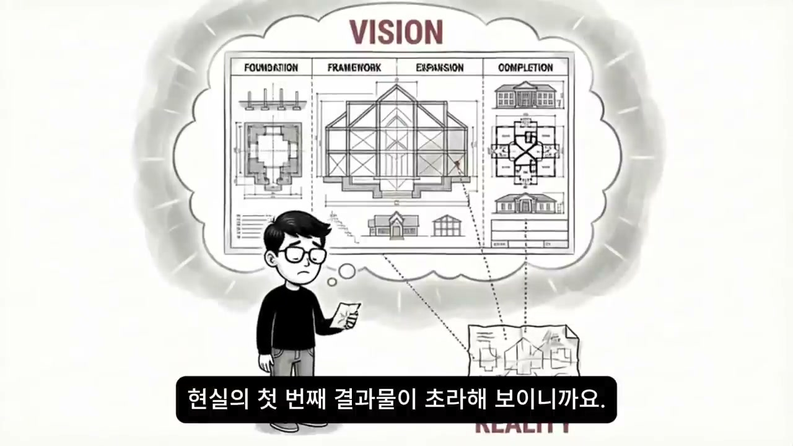
“완벽하지 않으면 시작하지 않겠다”는 심리가 실행지연의 핵심 원인이라고 재강조합니다. 이어 2009년 Nature Reviews Neuroscience 언급을 통해, ‘계획이 충분히 좋은가?’라는 반복 자기의심이 뇌에 만성 스트레스로 인식된다고 연결합니다.
화면은 VISION(정교한 건축 청사진)과 REALITY(조잡한 첫 산출물)의 대비입니다. 첫 결과물이 초라해 보이는 심리 충격이 왜 시작 회피로 연결되는지 도식으로 설명합니다.
세그먼트 14 [7:12 - 7:46]
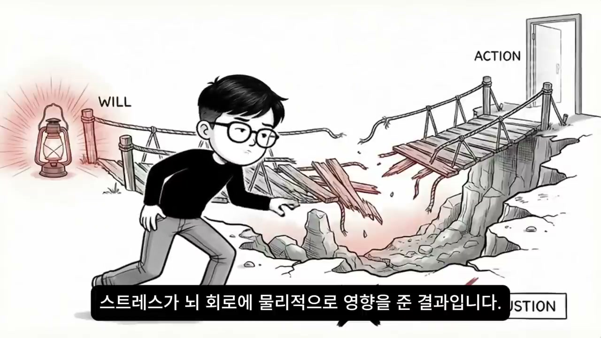
스트레스 신호가 반복되면 전두엽 실행기능이 급격히 약해져 “알면서도 못 움직이는 상태”가 된다고 말합니다. 이는 성격 문제가 아니라 스트레스가 회로에 물리적으로 준 영향이며, 의지력 자체가 없는 게 아니라 의지력을 발휘할 회로가 지쳤다는 해석입니다.
이미지는 WILL 쪽 등불과 ACTION 문 사이 다리가 붕괴된 형태입니다. ‘의지가 있는데도 행동으로 건너가지 못하는 단절’을 직관적으로 표현합니다.
세그먼트 15 [7:46 - 8:18]
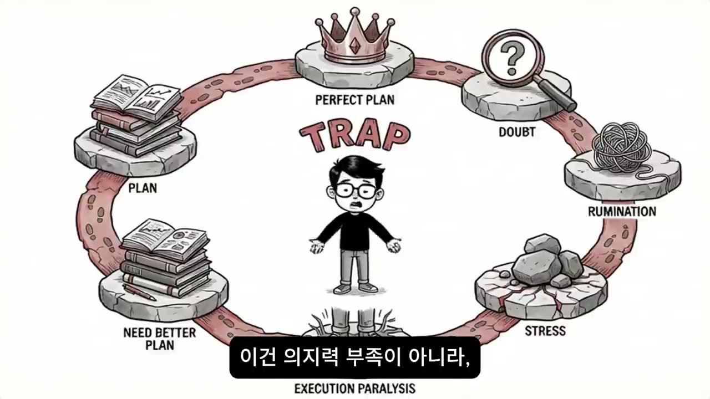
요약 고리는 명확합니다: 의심→반추→스트레스→실행마비→더 완벽한 계획 요구→초기화. 따라서 문제는 의지력 부족이 아니라 뇌가 만든 완벽의 함정(TRAP)이며, 끊을 지점이 존재한다고 선언합니다.
도식에는 PLAN, PERFECT PLAN, DOUBT, RUMINATION, STRESS, EXECUTION PARALYSIS, NEED BETTER PLAN이 원환으로 연결되어 있습니다. 전 구간이 닫힌 루프라 “밖으로 나가는 문”이 없다는 감각을 강하게 줍니다.
세그먼트 16 [8:18 - 8:50]
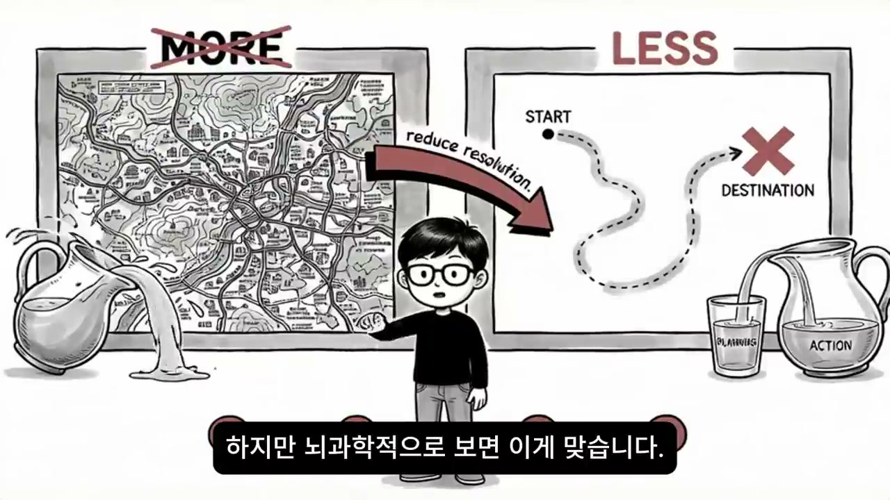
화자는 반직관적 처방을 제시합니다: 실행력을 억지 증강하기보다 계획의 해상도를 의도적으로 낮춰야 한다는 것. 이유는 간단히, 계획에 쓰는 에너지를 줄여야 실행에 쓸 에너지가 남기 때문입니다.
이미지도 MORE(복잡 지도)에서 LESS(단순 경로)로 reduce resolution 화살표가 이동합니다. 좌측 과밀 정보와 우측 최소 경로의 대비가 “덜 계획해야 더 움직인다”는 메시지를 압축합니다.
세그먼트 17 [8:50 - 9:22]
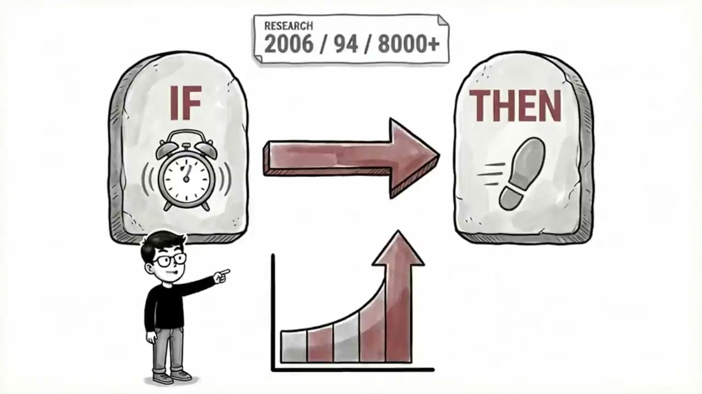
첫 방법은 If-Then planning(“만약 X 상황이면 Y 행동한다”)입니다. 2006년 대규모 메타분석(94개 연구, 8,000명 이상)에서 목표 달성률의 유의미한 상승이 보고되었다고 소개합니다.
화면도 RESEARCH 2006 / 94 / 8000+, IF → THEN, 상승 그래프를 동시에 제시합니다. 핵심은 거대한 전체 계획이 아니라 ‘조건 1개 + 행동 1개’의 자동 연결입니다.
세그먼트 18 [9:22 - 9:54]
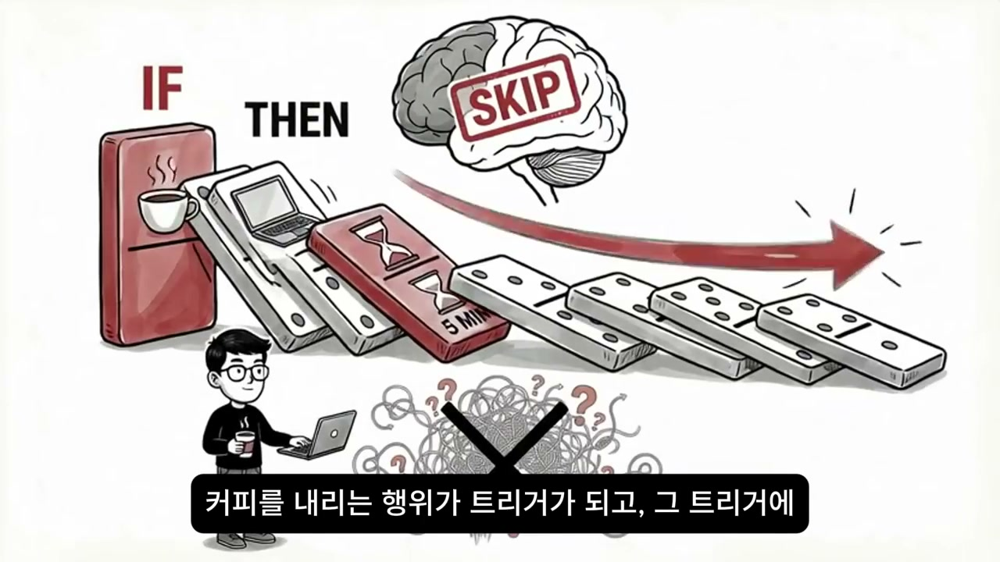
구동 예시는 “아침에 커피를 내리면, 노트북을 열고 5분만 작업한다”입니다. 트리거(커피)와 행동(5분 작업)을 결합해 “할까 말까” 판단 단계를 건너뛰는 것이 목적입니다.
이미지엔 커피 아이콘이 붙은 IF, 노트북/5 MIN 도미노, 뇌의 SKIP 스탬프가 나타납니다. 즉 전두엽의 추가 심의 과정을 생략하고 자동 관성을 만드는 장면입니다.
세그먼트 19 [9:54 - 10:29]
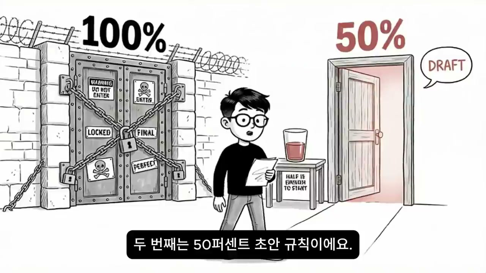
5분은 뇌가 저항감·위협감을 크게 만들기엔 너무 짧은 단위라는 설명이 이어집니다. 대부분 5분으로 시작하면 20~30분으로 자연 확장되며, 문제는 지속보다 시작이라는 주장입니다.
화면은 큰 DRAFT 문서와 키워드 중심 작성 장면(완성문보다 뼈대 먼저)으로 이어져 다음 방법(50% 초안)으로 연결됩니다. 즉 “문장 완성” 대신 “핵심 단서 배치”가 시작 장벽을 낮춘다는 전환입니다.
세그먼트 20 [10:29 - 11:02]
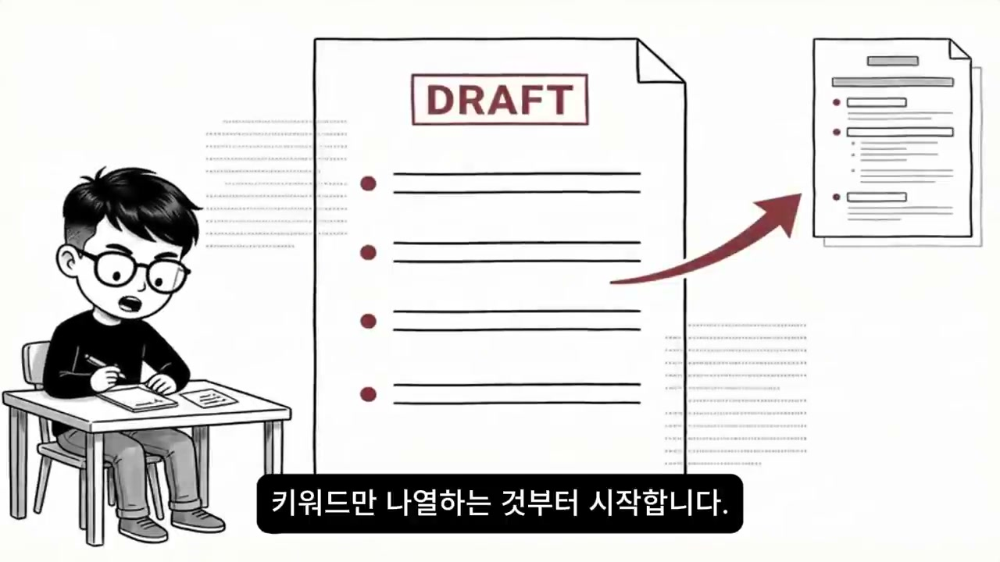
두 번째 방법은 100% 완성 목표 대신 50% 초안을 목표로 두는 규칙입니다. 보고서라면 배경·문제점·제안·기대효과 같은 키워드 뼈대부터 쓰고, 기획안이라면 핵심 아이디어 3줄부터 쓰라고 제안합니다.
이미지에서 100%는 자물쇠·쇠사슬·LOCKED 문으로 막혀 있고, 50% DRAFT는 열린 문으로 표현됩니다. “완벽 목표는 진입 금지, 초안 목표는 입장 허용”이라는 상징이 분명합니다.
세그먼트 21 [11:02 - 11:35]
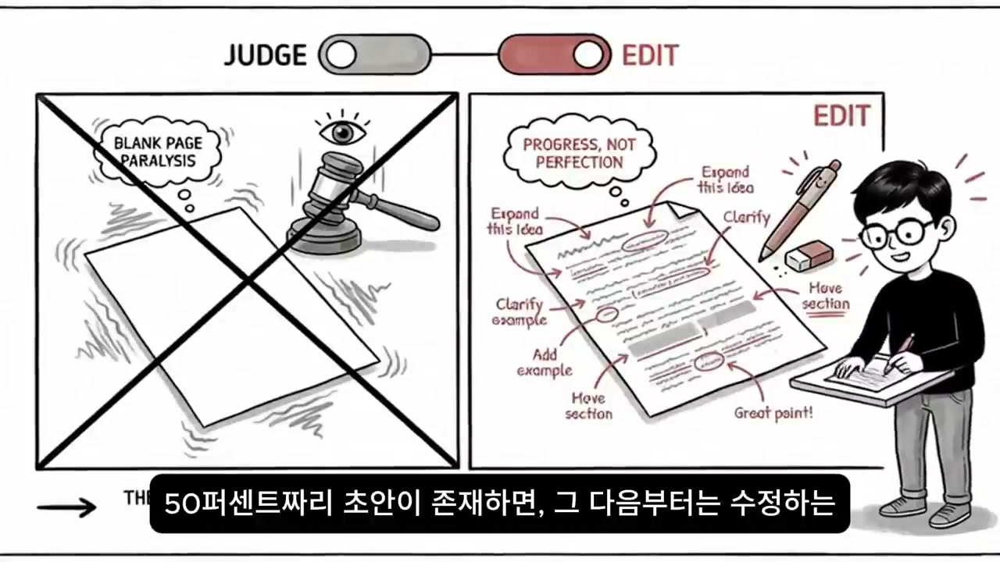
초안이 존재하면 과제가 “시작”이 아니라 “수정”으로 변환됩니다. 백지에서 시작할 때의 평가모드가 꺼지고, 눈앞에 대상이 있으므로 편집모드로 손이 먼저 움직인다는 게 핵심입니다.
화면(계획 타이머 도식)은 엄밀히 다음 문맥과 겹치지만, PLAN에서 15 MIN GO로 넘어가는 구조는 같은 원리를 보강합니다. 즉 계획 단계를 빠르게 접고 실행 모드로 강제 전환하는 흐름입니다.
세그먼트 22 [11:35 - 12:08]
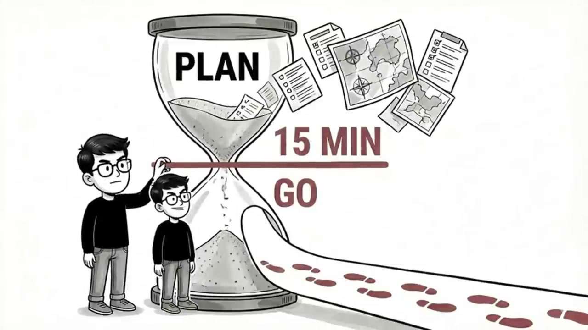
세 번째 방법은 계획 시간 자체에 제한을 거는 것입니다. 15분 안에 오늘 할 일을 정한 뒤, 타이머가 울리면 계획이 미흡해 보여도 강제로 종료하라고 말합니다.
이미지는 JUDGE ↔ EDIT 토글, 좌측 BLANK PAGE PARALYSIS(판단모드), 우측 PROGRESS, NOT PERFECTION(편집모드) 대비를 보여줍니다. 즉 시간 제한의 기능은 양보다 모드 전환(평가→실행/편집)에 있다는 설명과 맞물립니다.
세그먼트 23 [12:08 - 12:40]
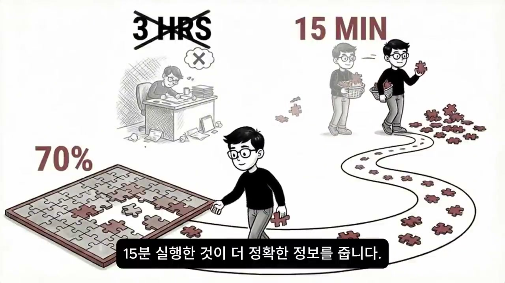
계획 완성도가 70%든 100%든, 실행하면서 수정해야 할 양은 거의 비슷하다는 주장입니다. 나머지 30%는 행동 중 실제 데이터를 얻으며 채워지고, 책상 앞 3시간 고민보다 15분 실행이 더 정확한 정보가 된다고 말합니다.
이미지의 PLAN vs ACTION 저울, 도미노·물 붓기·모래시계 화살표는 세 방법이 공통적으로 실행 쪽에 무게를 이동시키는 장치임을 보여줍니다.
세그먼트 24 [12:40 - 13:14]
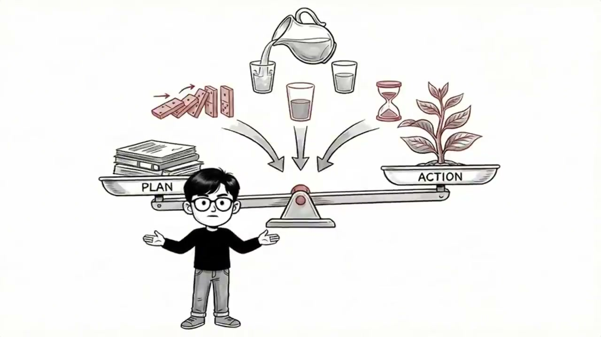
세 방법의 공통점은 “계획회로 에너지를 실행회로로 돌리는 것”이라고 정리합니다. 동시에 “그래도 계획은 중요하지 않나?”라는 예상 반론을 수용하면서, 진짜 쟁점은 계획의 목적이라고 선회합니다.
화면의 3HRS(취소) vs 15 MIN, 그리고 70% 퍼즐 완성은 “긴 계획보다 짧은 실행이 실제 구조를 더 빨리 드러낸다”는 메시지를 강화합니다.
세그먼트 25 [13:14 - 13:45]
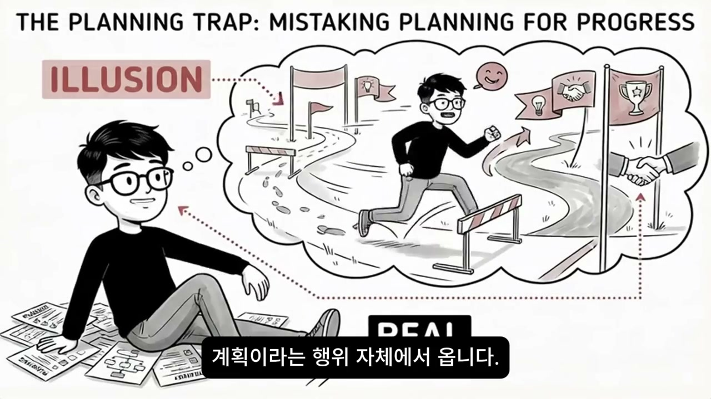
“계획은 실행을 위한 도구이지 불안 관리 도구가 아니다”가 이 구간 핵심 문장입니다. 완벽한 계획이 주는 안심은 실행 성과에서 오는 게 아니라 ‘계획했다’는 행위 자체에서 오며, 보상회로가 ‘잘했다’ 신호를 먼저 줘서 행동 없이도 만족감이 발생한다고 설명합니다.
이미지 상단 THE PLANNING TRAP: MISTAKING PLANNING FOR PROGRESS, ILLUSION, 하단 REAL 대비가 정확히 그 논리를 도식화합니다. 생각 속 진전 환상과 현실의 정체가 분리되어 있음을 명시합니다.
세그먼트 26 [13:45 - 14:18]
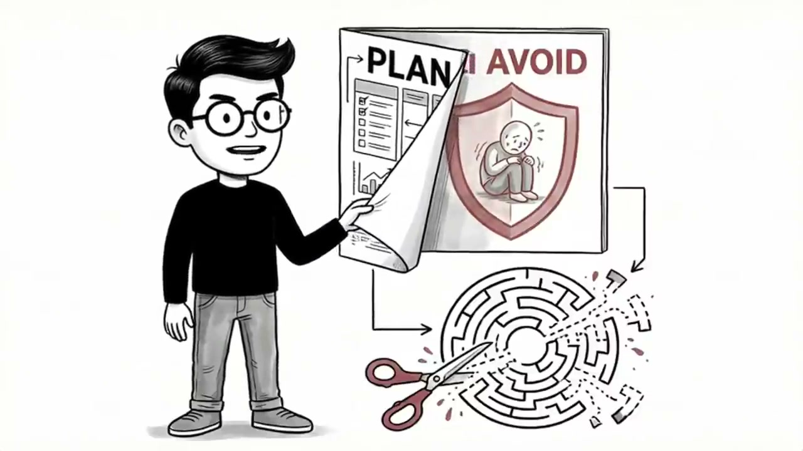
그래서 계획 반복 패턴이 끊기지 않는다고 말합니다. 계획이 불안을 낮추는 도구로 쓰이고 있다면 그것은 계획이 아니라 회피이며, 이 사실을 자각하는 것만으로도 루프의 절반은 끊긴다는 주장입니다.
화면은 PLAN 페이지가 AVOID(방패 속 웅크린 인물)로 넘어가고, 가위가 미로를 잘라내는 형상입니다. “지금 준비인가, 미루기인가?”라는 메타인지 질문이 루프 절단 도구임을 시각적으로 보여줍니다.
세그먼트 27 [14:18 - 14:50]
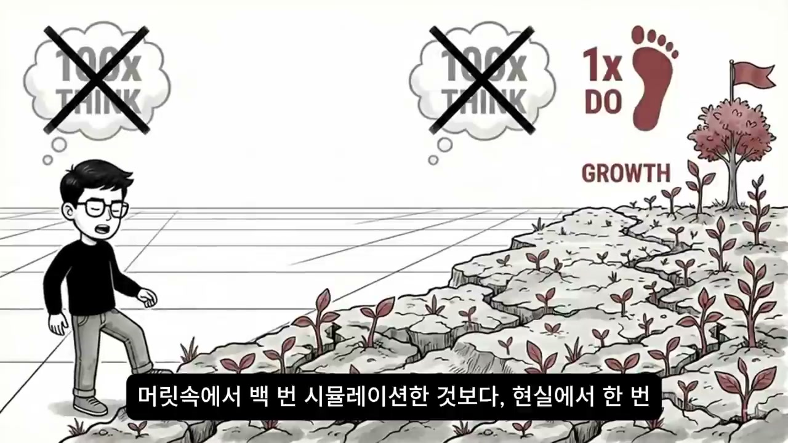
이 질문 자체가 메타인지를 작동시킨다고 설명합니다. 불확실한 상태에서 시작하는 불편함은 당연하지만, 그 불편함은 성장 시작 신호이기도 하며, 머릿속 100번 시뮬레이션보다 현실 1번 충돌이 더 많은 정보를 준다고 말합니다.
이미지에는 성장 트랙(미로→열쇠→도미노→물컵→모래시계→물음표→발자국)과 중심의 GROWTH 나무가 배치됩니다. 즉 사고 실험에서 실제 발걸음으로의 전환이 성장을 만든다는 결론입니다.
세그먼트 28 [14:50 - 15:19]
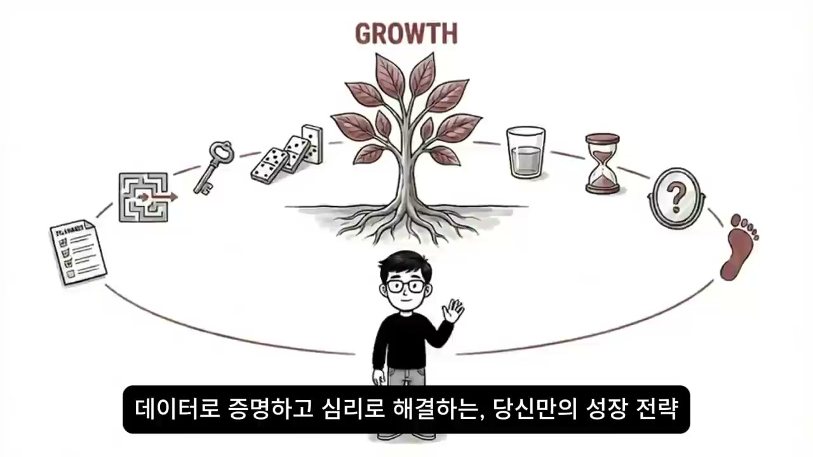
마지막 문장은 “당신의 머릿속 청사진은 이미 충분히 정교하다. 부족한 것은 계획이 아니라 불완전한 첫걸음”입니다. 완벽한 계획보다 불안정한 첫 행동이 더 멀리 데려다 준다고 강조하며 마무리합니다.
화면에는 100x THINK가 두 번 취소선 처리되고 1x DO, GROWTH, 성장하는 식생 경로가 나타납니다. 엔딩에서 채널 슬로건(데이터로 증명하고 심리로 해결)과 함께, 본 영상 내용은 연구 기반 심리 정보이며 의료 진단/치료 대체가 아니라는 고지도 포함됩니다.
“둘 다 계획을 세우는 데 천재적이면서도 그 계획을 실행하는 데는 설명할 수 없는 브레이크가 걸린다.”
“안 하는 게 아니라 하고 싶은데 몸이 안 따라오는 거예요.”
“뇌는 계획을 세우는 것과 실행하는 것에 같은 에너지를 씁니다.”
“계획 시뮬레이션에 80%를 쓰면 실행에 쓸 에너지는 20%밖에 안 남습니다.”
“이건 의지력의 문제가 아닙니다. 당신 탓이 아닙니다.”
“완벽하지 않으면 시작하지 않겠다는 심리가 실행지연의 핵심 원인입니다.”
“의지력이 없는 게 아니라 의지력을 발휘할 회로가 지쳐 있는 겁니다.”
“중요한 건 실행력을 높이는 게 아니라 계획의 해상도를 의도적으로 낮추는 겁니다.”
“핵심은 전체 계획이 아니라 딱 하나의 조건과 하나의 행동만 연결하는 겁니다.”
“50%짜리 초안이 존재하면 그다음부터는 수정 작업이 됩니다.”
“계획 타이머의 진짜 역할은 시간 관리가 아니라, 여기까지만 해도 된다는 허락입니다.”
“계획은 실행을 위한 도구이지 불안을 관리하기 위한 도구가 아닙니다.”
“지금 내가 계획을 세우는 건 실행을 준비하는 건가, 아니면 실행을 미루는 건가?”
“머릿속에서 백 번 시뮬레이션한 것보다 현실에서 한 번 부딪힌 것이 더 많은 걸 알려줘요.”
이 영상은 실행 실패를 도덕적 문제(게으름/의지박약)에서 신경인지적 문제(에너지 배분, 반추 루프, 스트레스-전두엽 저하)로 옮겨 해석합니다. 그래서 해법도 “더 강한 의지”가 아니라 “더 작은 시작, 더 낮은 계획 해상도, 더 빠른 모드 전환”에 놓입니다.
실용적으로는 세 가지가 즉시 적용 가능합니다.
장기적으로 가장 큰 시사점은 계획의 기능 재정의입니다. 계획이 불안 회피 도구로 변하면 진행은 멈추고 루프가 고착됩니다. 반대로 메타인지 질문으로 현재 상태를 점검하고, 불완전한 시작을 허용하면 계획은 다시 실행의 도구로 복귀하며 실제 성장 데이터가 축적됩니다.
댓글
GitHub 이슈 기반 댓글 시스템입니다.